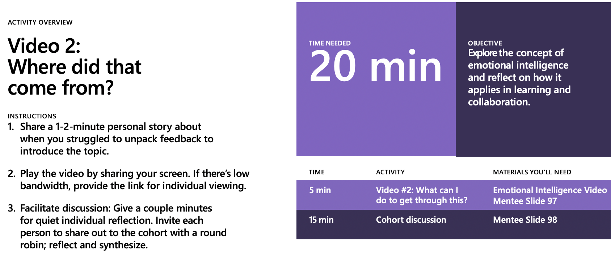
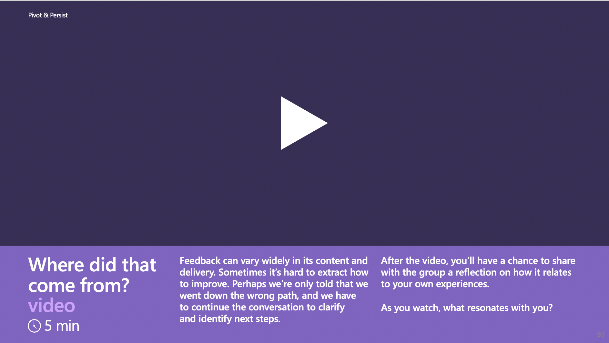
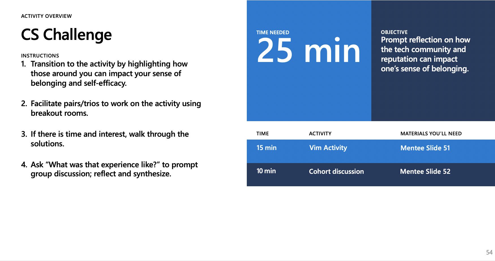
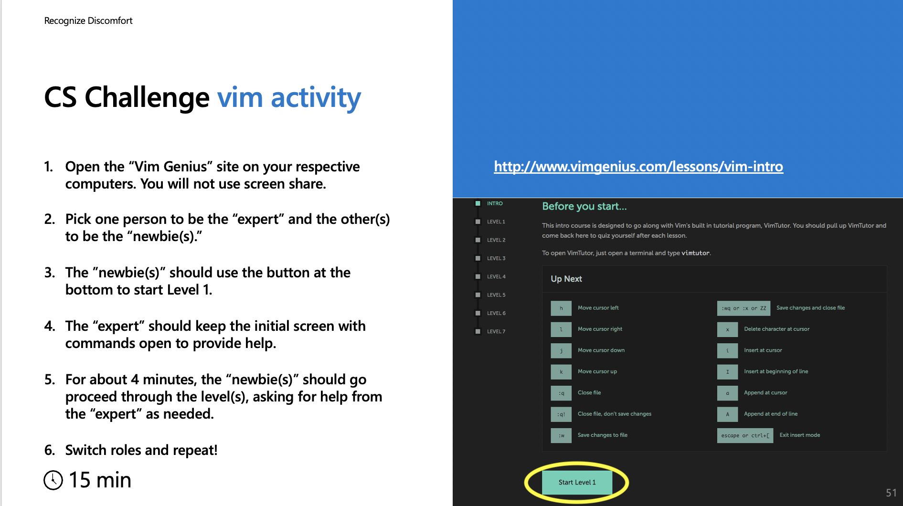
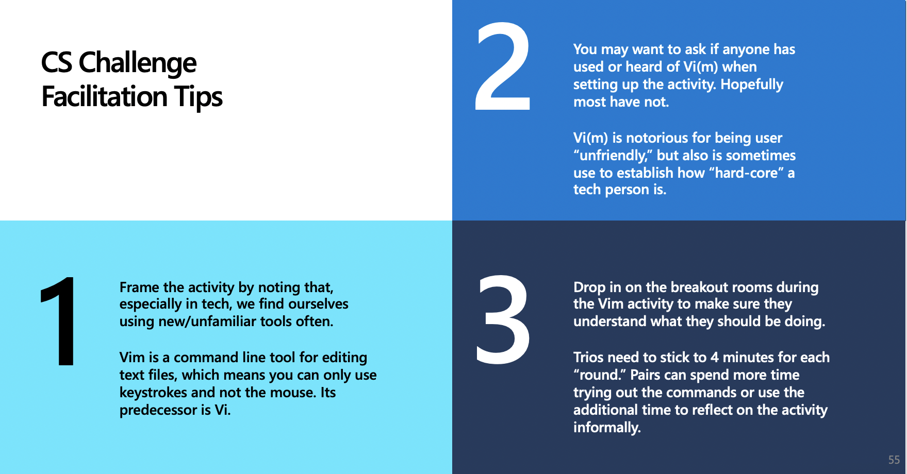
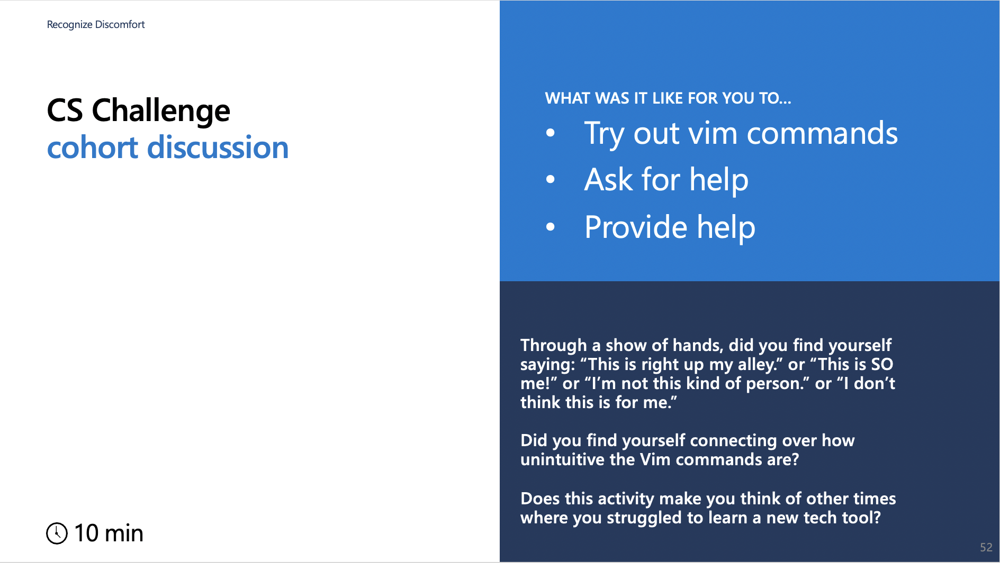

During our scheduled sessions, you will be engaged in training components that lend themselves to group engagement. In this self-guided work, you will undertake 3 additional activities on your own. We expect the activities to take between 30 and 45 minutes; you should plan to a total of 2 hours over the next week and a half.
Self-Guided Activity #1: Work with the toolkit
Estimated time: 30 minutes
This mentoring program is structured with a toolkit, which includes 3 main resources:
To get started with the toolkit:
- Craft a story for the Where did that come from? (Giving and Receiving Feedback)
video.
- Consider a scenario based in the "How do I find my way?" Learning Lab.
- Submit a reflection on this self-guided work.
Part 1: Craft a story
In the next training session, you will be in a small group to practice the story share activity for a video around feedback.
To prepare, spend about 15 minutes developing your story following the instructions below.
Why?
Stories are a core component of this mentoring program -- you can craft stories that will help students (your mentees)
see the relevance, be motivated and feel that success is attainable to them.
When our stories resonate with students, they are more apt to tune in and have a better experience.
For reference, here are the relevant parts of the toolkit for the video you'll be focusing on:
|  |
 |
| Mentor Guide Instructions |
Mentee Slide Introduction |
- Watch the Where did that come from? (Giving and Receiving Feedback)
video.
- Reflect upon the following:
- Was there a time when you received difficult but constructive feedback which helped you to grow?
What helped you to take in that feedback and use it wisely?
- Can you recall a situation when you received poor feedback-- whether an empty box or one covered in barbs
where you simply walked away? Did you seek an alternative source to get the feedback you needed? Where did you find it?
- Was there a situation when you could have framed your feedback more effectively to another person?
It’s important to reflect on this for yourself as a person/learner and also as you think about your role as a mentor. As you work with your co-mentor and mentees, you may find yourself in a position where you are giving or receiving feedback and guidance. What you say and how you deliver it can signal your respect and support. Taking the time to digest and recognize the value of constructive notes can help you grow in your role.
When training is complete and your are engaged in the program launch, we hope you can talk openly with your co-mentor about what has gone well and where there might be opportunities to grow. Remember, embracing a growth mindset is so important for mentors; we need to stay open to who we, our co-mentors and our mentees may become before our very eyes.
- Draft a mentoring story that can help learners appreciate the importance of giving and receiving effective feedback, ideally receiving critical or difficult feedback in particular, as this can be especially challenging for students. It is not essential to write a full script; it is actually better to jot down the key points you want to make rather than a script. That way, you can remember the gist of the story you want to share without memorizing it. You are not committing to using this particular story when you are leading your mentoring program. You should aim for a story that can be told in 2-3 minutes. Any story over 3 minutes tends to be too long particularly as this program takes place on-line.
Remember:
- A superstar story is less attainable. It’s great to include a successful outcome, but a student will connect more to your story if you can share how you struggled before succeeding, or what you grappled with before persisting.
- The video walks through different boxes of feedback. It might help to think about a situation when you got an empty box or a particularly negative box and sought an alternative source. Or a situation when you heard critical feedback which was hard, but came from a supportive place, and it helped you to grow. Many of our own feedback stories may be filled with negative emotions, which is part of telling an authentic story. It can be useful to think about how we took charge of a feedback situation if you want to tell a story that leaves students inspired or encouraged that they can also take agency over their own learning.
- There is no one perfect story. Being authentic is important; please do not feel compelled to tell any story except one that is true for you. You will have time before the program launch to talk about your stories with your co-mentor and gain feedback.
Part 2: Consider a scenario
In the next training session, we will debrief this scenario that could arise during the
"How do I find my way?" Learning Lab. To prepare,
spend about 10 minutes considering the scenario below
and how you might respond; we will share out some of your responses (anonymously).
Why?
Each Learning Lab has a CS Challenge activity to help spark conversation related to the resilience topics.
The intention is to ground the discussion in a concrete, shared experience. As you invite students to share their
response to the activity, you may find that you must balance how you steer the conversation to align with the goals
of this mentoring program. How can you keep the mentoring space open?
This CS Challenge for the "How do I find my way?" Learning Lab uses a web site
called Vim Genius to probe
the experience of working with a tech tool and having someone to ask for help.
The mentees are divided into pairs to take turns trying out Level 1,
asking each other for help as needed.
For reference, here are the relevant parts of the toolkit for the Vim activity mentioned in the scenario:
|  |
 |
|  |
 |
| Mentor Guide Instructions and Tips |
Mentee Slides Activity and Discussion Prompts |
- Consider the following hypothetical scenario that could happen during the unstructured time at the end
of the session.
The Vim activity has sparked one of the students to ask about IDEs (Integrated Development Environments):
“I’m curious. Do you all use Microsoft Visual Studio Code? I’m planning to write an extension for cloud computing with Azure.”
A couple others join in, and your co-mentor (who is very familiar with VS Code and the Azure platforms)
dives into the technical questions. Since your co-mentor is the one responding, you have been scanning
to see if the cohort looks engaged. You notice that some of the students are completely silent and one
looks very confused. Then a student privately messages you to say:
“I’m starting to really doubt if I should have participated in this program; I have no idea what we’re talking about.”
While you are glad that this conversation was sparked by curiosity, you are now worried that the
jargon in the space is excluding people.
- Brainstorm a response. What could you do or say to help? [Submit your response below]
Part 3: Submit your reflection
Use the form below to submit a reflection on this self-guided work.
Why?
We hope the self-guided work gives you the opportunity to reflect on your own journey as a mentor. In addition,
by engaging in this activity, you will be contributing information that will help with co-mentor matching.
We are aiming to create mentoring teams that vary along many dimensions, including how comfortable mentors
are with sharing their stories and their own tech experiences.
Top
Self-Guided Activity #2: Facilitate to invite
Estimated time: 45 minutes
Much of your engagement will be in a remote setting with a cohort of mentees. As a mentor, you
play an important facilitator role by inviting participation.
Not all participation goes smoothly or positively.
As this resource
(handout) explains,
there is a continuum of action we can take when difficult moments occur, and we want to underscore the importance of having
access to many strategies. The good news is that some of what we have already practiced, including
active listening and reflecting back, will be useful.
To help practice:
- Watch the video: Is this for me? (Belongingness Part 2).
- Consider how to recognize and interrupt microaggressions through a scenario based in the
"How do I find my way?" Learning Lab.
- Consider how to offer microaffirmations
by continuing with the scenario work.
- Submit a reflection on this self-guided work.
Part 1: Watch the video.
The scenario you will consider is in response to this video, shared in the "How do I find my way?" Learning Lab.
Why?
Belonging is not always about whether you believe you can do something.
It is also about whether you see yourself as a “tech person“ or as part of the “tech community.”
Having a community that invites you in and provides support can make a big difference in whether you decide to persist.
- Watch Is this for me? (Belongingness Part 2).
Part 2: Consider how to recognize and interrupt microaggressions
In the next training session, we will debrief this scenario that could arise during
the "How do I find my way?" Learning Lab.
To prepare, spend about 20 minutes reviewing the resources on microaggressions
and considering the scenario below. How you might respond?
We will share out some of your responses (anonymously).
Why?
When we invite participation, someone can say or do something that we don’t expect, even with group norms in place.
As a mentor and facilitator, you hold a responsibility to respond in some way.
- When microaggressions go unnoticed or unaddressed by the mentors, students (targets and observers)
may feel less trust in the program. For a refresher on microaggressions, read
this short piece.
- Not all negative or uncomfortable group dynamics are caused by
microaggressions, yet the strategies used to interrupt them can be helpful to mentors in a wide array of situations.
Review strategies that can help mentors respond to microaggressions
by reading this one-page handout
(adapted from this
original resource),
which provides a set of communication strategies
one can use to interrupt
difficult dynamics.
- Consider the hypothetical scenario that could happen during the round robin following the video share of
Is this for me? (Belongingness Part 2).
Here are the first two student responses:
Student 1: I remember being in a class in high school where I didn’t want to raise my hand
because I didn’t want to look stupid. I remember the teacher calling on me and then asking me to
defend my answer. I got the feeling he didn't think I could do it.
I guess I was the only woman and person of color in the class, and I just felt out of place.
Student 2: Hmmm. I remember in high school feeling challenged by my teachers and that was a good thing.
Are you sure that is how the teacher meant it? I know that to make it in tech, we have to toughen up.
Even if it's hard, I feel like I can make it on my own.
- Would you be tempted to stop the conversation after this second student or continue the round robin?
Why or why not?
[Submit your response below]
Part 3: Consider how to offer microaffirmations
Spend about 20 minutes reviewing the resources on microaffirmations before considering
an extension to the scenario.
Why?
Mentors have the power to share microaffirmations throughout program sessions. These can
help to cultivate a sense of belongingness.
- Read about microaffirmations
here.
- Review strategies that can help mentors convey microaffermations
by reading this one-page handout.
- Consider an extension to the scenario, where you continued to round robin more students.
Here are the next two student responses:
Student 3: On campus, I am part of a student organization where I do feel I belong.
I walk in and I feel like I can just be myself. But when I walk into my CS class…
you know that feeling of looking around and trying to impress people or that you have to fit in?
It’s like that for me. I hate that feeling. And Student 1? I have had a teacher treat me like that before.
I feel sad for you, but also a little relieved it wasn’t only me.
Student 4: I do know what you mean. I hate that feeling of trying to fit in, thanks for naming that.
When I started my summer research, I was very nervous. A graduate student working in the lab went out
of their way to make me feel welcome. They even asked my opinion on some things, and it made me
realize I had something to contribute. That felt good. After that I felt I could relax a little bit, like I could be myself.
- We deliberately incorporated microffirmation strategies in the responses of students 3 and 4.
How you think it might shift the situation if a co-mentor had chosen to interject
a microaffirmation after Student 2 spoke? What if it was at the end of the round robin during
when they were synthesizing? [Submit your response below.]
Part 4: Submit your reflection
Use the form below to submit a reflection on this self-guided work.
Why?
We hope the self-guided work will encourage you to try some new strategies.
In addition,
some of the responses you submit may factor in during the co-mentor matching process.
Top
Self-Guided Activity #3: practice perspective-taking
Estimated time: 45 minutes
How can you create a space where all mentees feel invited and respected?
The next training session will emphasize how this program is designed with a co-mentoring team to support
and complement each other. Mentors can vary widely in their own lived experience and background in
collaborative interactions. We would be remiss if we did not apply “do no harm” to the mentors’
experiences as well as to the mentees’. As a starting point, this self-guided work invites you to
consider how your social identity can factor into your mentoring and co-mentoring roles.
To help examine the role social identity can play in this mentoring program:
- Complete the social
identity wheel activity.
- Consider a set of scenarios to prepare for the next training session.
- Submit a reflection on this self-guided work.
Part 1: social identity wheel activity
Take about 15 minutes to complete the social identity wheel;
this is one of the most widely-used activities to help people to explore their own
social identities before they begin a role, including teaching or mentoring.
It sets the stage for the first exercise you will do with your co-mentor as you prep for the program.
Why?
Some of our most important social identities may not be visible to others, and it can be painful when people make assumptions. If our most visible social identities are not how we define ourselves, it can lead to friction if we feel stereotyped or cast into a particular role based on that group identity.
We all come with histories and prior experiences. Some people have substantial experience reflecting on their own social identities, while others may not. Even those familiar with social identity terminology can continue to update knowledge. Please refer to
this resource
or this longer resource
and notice which terms you are more or less familiar with.
- If you have not done so before (or if you haven’t engaged with it in a long time), complete the social identity
wheel activity:
- Fill out the
social identity
wheel handout. Consider the wheel’s list of social identities as a starting place. You can include social groups to which you identify that are not included in the wheel.
- Engage in the questions in the center of the handout.
- Take a moment to think about what aspects of your identity might be visible or invisible to your co-mentor.
Part 2: scenarios
In the next training session, you will discuss the following scenarios in groups.
The goal of this activity is to engage in perspective-taking, to reflect on students you may meet, and
to consider how a co-mentor can complement and balance the mentoring space.
To prepare,
take 25-30 minutes to consider how you might react to each hypothetical student.
Why?
Honest reflection is important as we engage with the topic of identity. It can be uncomfortable because of its connection to assumptions and stereotypes, but we are less likely to make assumptions (guess someone’s gender, conclude something about someone’s race or family background) when we put the work in to examine our perceptions. This is particularly important when we are serving as mentors.
Reflecting on our social identities and the impact they could have on the mentoring space can be empowering. Our identities are assets that can bring unique perspectives to the mentoring program through our own lived experience. Self-reflection can help us to be more intentional about how we collaborate as co-mentors, serve as a starting point for gaining permission to “call in” our co-mentor when needed, and offer ourselves the space (and grace) to be life-long learners as we continue to grow in our knowledge.
- Read the descriptions of three hypothetical students and scenarios described below.
Student A
When you first meet with this student, they express anxieties about taking Computer Science. They mention that they are a
first-generation college student and have no prior experience with programming in high school. During the CS Challenge of the "Can I hack it?" Learning Lab, they share “I feel I am in over my head.”
Student B
When you first meet this student, she starts telling you about some of her favorite programming projects
in high school. Enrolled in an elite institution,
you notice she makes a point of dropping a few technical terms
and is very enthusiastic about studying computer science.
You notice in the CS challenge of the "Am I up to the Challenge?" Learning Lab that she and her
partner finished up very quickly. She comments to the group, with a bit of annoyance,
“Honestly, I am a little disappointed in this exercise. This was not challenging at all.”
Student C
When you first meet him, he tells you that he is a non-traditional age student and that hasn't taken a
class in over 30 years. His kids convinced him to go back for computer programming. While he is very excited,
he also shares that he is not a native English speaker and he is a little worried about how he will be accepted
in the group. During the CS Challenge of the "Can I pivot?" Learning Lab
with his partner, he seemed to struggle with active listening and didn’t
appear open to compromise.
- Reflect on the following (privately, this is a starting point):
- Do you feel more/less comfortable with each scenario?
- If your social identities were different, do you think you might respond or resonate differently?
If the student was described differently (e.g., a different background or identity)
would your response change?
- Brainstorm a response to the scenario, using these prompts as a starting point:
- What can you say/do to shift this dynamic?
- What role might emotions be playing?
- How does having a co-mentor shift your response? Might you step up or step back?
[Submit your response below]
Part 3: Submit your reflection
Use the form below to submit a reflection on this self-guided work.
Why?
This act of self-reflection can be very important as we think about
how we bring ourselves into co-mentoring and the mentoring space.
Top
{kind=link}
{kind=link}
{kind=link}
{kind=link}
{kind=link}
{kind=link}